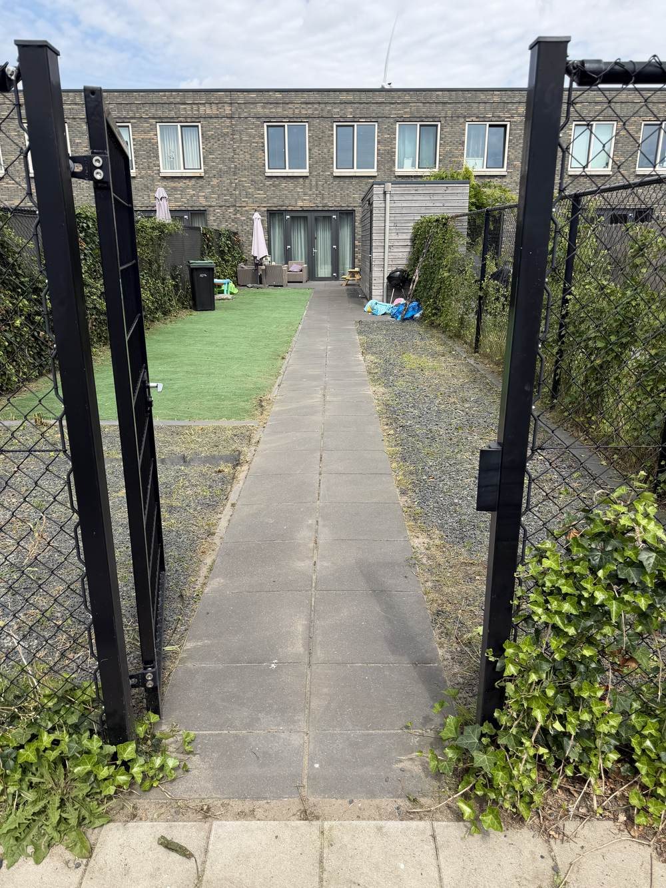
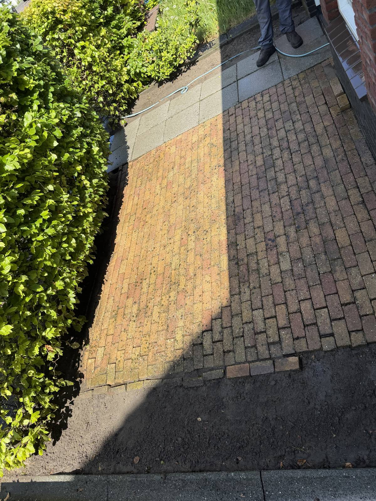
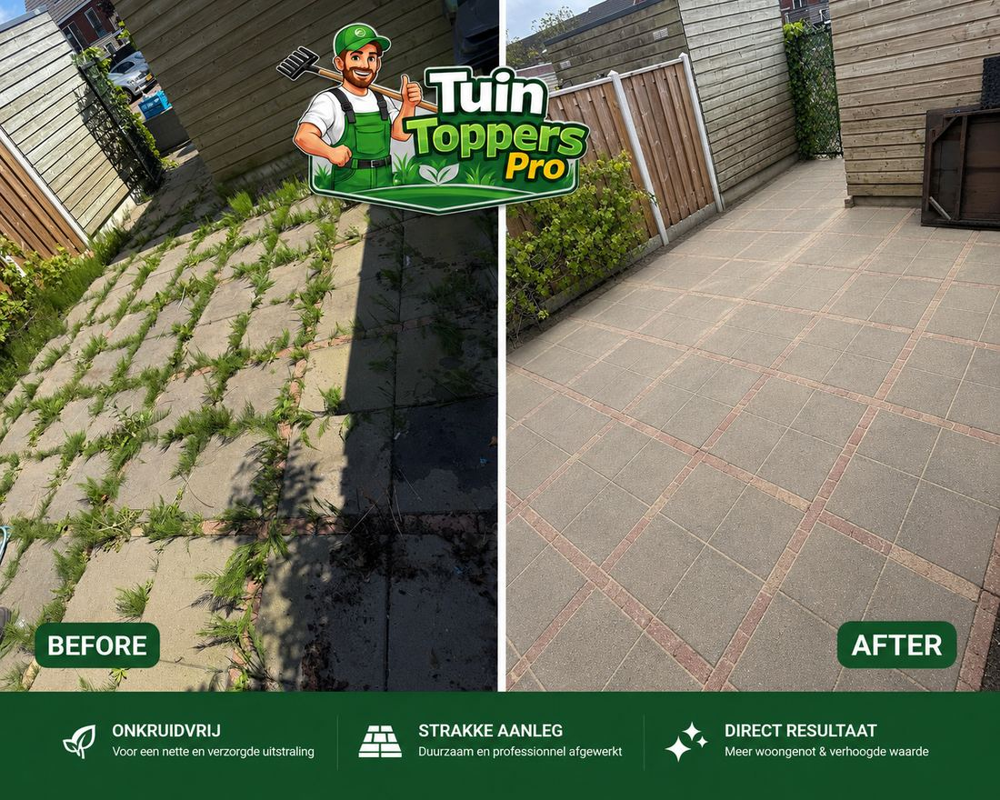

vanaf€25
Onkruid verwijderen
Volledige verwijdering van onkruid tussen tegels, opritten en paden.
Aanvragen →Van hardnekkig onkruid tot een smetteloze gevel: TuinToppersPro voert elke klus vakkundig uit. Geen verrassingen achteraf — u weet vooraf precies wat u betaalt.
Onkruid tussen tegels en in voegen is niet alleen lelijk, het tast op termijn ook uw bestrating aan. Wij verwijderen onkruid grondig — inclusief wortels — tussen tegels, opritten en tuinpaden, zodat het langer wegblijft.

Met professionele hogedrukapparatuur reinigen wij oprit, terras, gevel en schutting tot in de kleinste voeg. Vuil, mos, algen en groene aanslag verdwijnen — voor een fris en verzorgd resultaat dat direct opvalt.

Een verzorgde tuin begint bij een strakke haag en nette bomen. Wij snoeien in de juiste vorm en op het juiste moment, zodat uw beplanting gezond blijft en er verzorgd uitziet — het hele jaar door.

Schone ramen maken direct verschil in de uitstraling van uw woning en zorgen voor maximale lichtinval. Wij reinigen alle ramen van uw volledige huis, binnen én buiten, streeploos en grondig.
Transparante, vaste prijzen — geen verrassingen achteraf.
Volledige verwijdering van onkruid tussen tegels, opritten en paden.
Aanvragen →Krachtige reiniging van uw oprit. Vuil, mos en aanslag verdwijnen.
Aanvragen →Diepe reiniging van tegels en bestrating in de gehele tuin.
Aanvragen →Frisse gevel zonder groene aanslag — direct zichtbaar resultaat.
Aanvragen →Strak gesnoeide hagen en bomen voor een verzorgde uitstraling.
Aanvragen →Schutting weer als nieuw — schoon, fris en duurzaam.
Aanvragen →Streeploze ramen binnen én buiten, voor maximale lichtinval.
Aanvragen →Liever alles in één keer geregeld? Bekijk onze onderhoudsabonnementen of vraag de eenmalige intro-beurt aan vanaf €200.
Ja, in onze prijzen is standaard materiaalgebruik inbegrepen. Bij grotere of specifieke klussen (bijvoorbeeld extra onkruidremmend zand) bespreken we dit vooraf, zodat er geen verrassingen zijn.
Zeker. Veel klanten combineren bijvoorbeeld onkruidvrij maken met hogedrukreiniging van de oprit. Geef bij uw aanvraag aan welke diensten u wilt combineren, dan stellen wij een totaalprijs voor.
Na uw aanvraag reageren wij binnen 24 uur met een prijsopgave en een voorstel voor een datum. Hoe snel we daadwerkelijk kunnen inplannen hangt af van de drukte in uw regio.
Wij reageren binnen 24 uur en denken graag met u mee over de beste aanpak voor uw tuin.